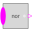
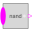
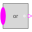
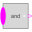

PartialBooleanMISOPartial block with a BooleanVectorInput and a BooleanOutput signal |
Parameters (1)
| nu |
Value: 0 Type: Integer Description: Number of input connections |
|---|
Connectors (2)
| u |
Type: BooleanVectorInput[nu] Description: Vector of Boolean input signals |
|
|---|---|---|
| y |
Type: BooleanOutput Description: Boolean output signal |
Extended by (5)
|  |
Modelica.Blocks.MathBoolean Logical 'nor': y = not ( u[1] or u[2] or ... or u[nu] ) |
|  |
Modelica.Blocks.MathBoolean Logical 'nand': y = not ( u[1] and u[2] and ... and u[nu] ) |
|
Modelica.Blocks.MathBoolean Logical 'xor': y = oneTrue(u) (y is true, if exactly one element of u is true, otherwise it is false) |
|
|  |
Modelica.Blocks.MathBoolean Logical 'or': y = u[1] or u[2] or ... or u[nu] |
|  |
Modelica.Blocks.MathBoolean Logical 'and': y = u[1] and u[2] and ... and u[nu] |